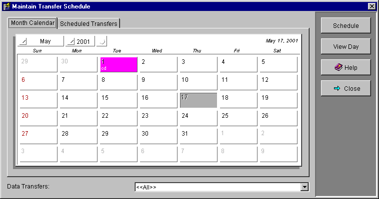
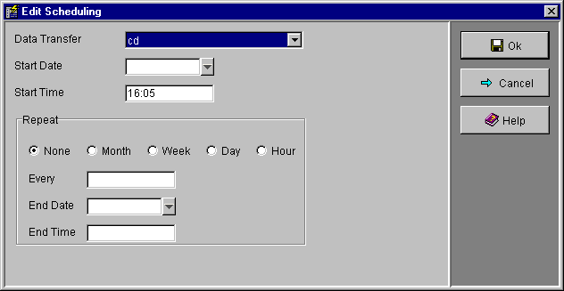

The schedule screens are used to schedule Data Transfers for automatic execution. The MDN Server will periodically check for scheduled data transfers and execute them at the defined times.
Three Schedule views and a properties screen are
provided:
Month Calendar
Scheduled Transfers
Day View
Scheduling Properties
Click on the desired tab to switch between the Month Calendar and Scheduled Transfers views, both of which have a Data Transfers combo box at the bottom of the screen that may be used to select which data transfer(s) are shown. Select a Data Transfer in the combo to show all schedulings for that data transfer, or select <<All>> to show all schedulings for all Data Transfers.

The Month Calendar view shows a calendar of the current month. Click on the Month Calendar tab to display the month calendar. All scheduled data transfers matching the selection criteria in the Data Transfers combo box are shown on the calendar.
If a scheduling has a repeat it may be shown in more than one day on the calendar to represent all the days when the scheduled data transfer will be executed.
You can select a day on the calendar by clicking on it. The selected day is highlighted and that day's date is shown in the top right hand corner of the calendar.
At the top left of the calendar are month and year fields that show what month and year the calendar is displaying. Clicking on these fields will allow you to change which month and year the calendar displays.
Pressing the Schedule button will create a new scheduling entry and display the Scheduling Properties screen to enter the scheduling details. The new scheduling will have its date set to the day currently selected in the calendar.
Pressing the View Day button will display the Day View screen for the currently selected day.

The Scheduled Transfers view shows the details of the individual schedulings, including which Data Transfer will be executed, when the execution will occur, how often it will repeat and when the scheduling will end. Only schedulings that match the criteria in the Data Transfers combo box will be displayed in the list.
To delete a scheduling, including all repeats, select it in the list and press the Delete button.
Selecting a scheduling and pressing the Properties button will display the Scheduling Properties to edit the scheduling.

The Day View screen shows all the schedulings, including repeats, for a single day. It has a list of half hour time slots in which any schedulings will be displayed. You can scroll up an down the time slots by clicking on the up and down arrows. There are also up and down arrows to change the day month and year shown by the Day View.
Selecting a time slot, by clicking on the time in the left column, and then pressing the Schedule button will create a new scheduling entry and display the Scheduling Properties screen to enter the scheduling details. The new scheduling will have its date and time set to the day and time currently selected in the day view.

The Scheduling Properties screen is used to enter or edit all the attributes of a scheduling. A single scheduling may be shown in more than one day of the Month Calendar view or more than one time slot in the Day View if it has a repeat. Each scheduling is a single entry in the Scheduled Transfers view.
Use the Data Transfer combo box to select which Data Transfer this scheduling will execute.
Start Date is the date the data transfer will be executed, or first executed if this scheduling is a repeat. Pressing the down arrow button to the right of the start date field will display a small calendar to allow you to select a date.
Start Time is the time the data transfer will be executed, using a 24 hour clock.
The fields in the Repeat grouping are used to specify repeats for this scheduling. If a scheduling has a repeat it will be periodically executed until its end date/time. Select one of the None, Month, Week, Day or Hour radio buttons in conjunction with the Every field to choose how often this scheduling will be repeated.
If the End Date field is left empty then the repeat will continue indefinitely, otherwise it will stop as specified by the End Date and End Time fields.